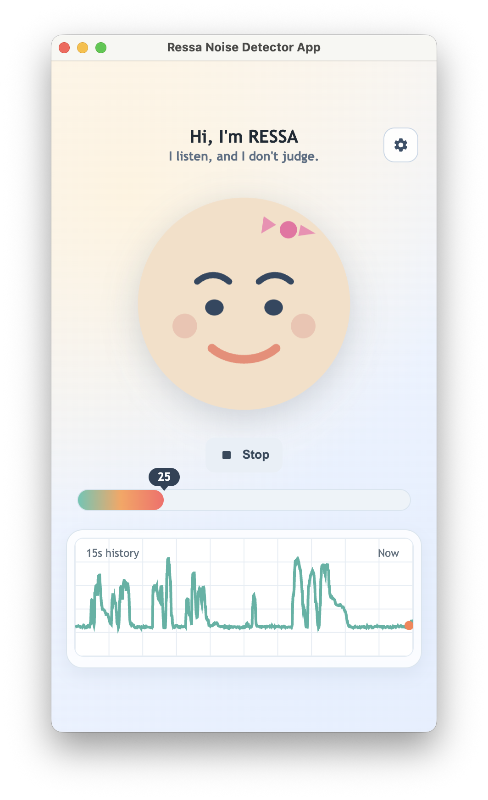
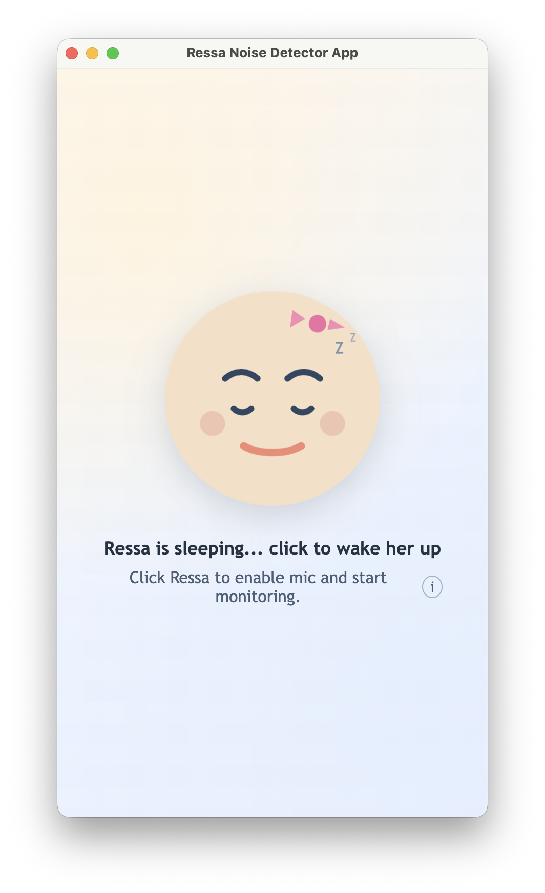

Live Status
See noise level and mood feedback instantly during office operations.
Production-Ready Office Tool
Inspired by real call-floor challenges, Ressa gives your office a clear live noise signal, local reporting, and Teams channel updates so meetings stay focused.
Detecting your platform...


See noise level and mood feedback instantly during office operations.
Track avg noise, peak windows, and loud-time trends for environment quality.
Share noise condition updates directly to Teams for fast coordination.
Friendly startup flow with privacy messaging and one-click mic enablement.
Portrait-first interface focused on Ressa, compact chart, and quick settings.
How It Works
Download for macOS or Windows. Ressa opens in a compact portrait window ready to go.
Click Ressa to wake her. She listens to ambient levels and shows live feedback with mood expressions.
Daily summaries and Teams webhook posts keep your team informed without any manual effort.
Features
Built for facilities teams, office managers, and HR departments who care about work environment quality.
Live meter, chart history, and expression-based signal for immediate awareness.
Derived daily metrics for peaks, averages, and loud durations by timeslot.
Send summary status to Teams channels via webhook for HR/ops visibility.
Fine-tune sensitivity and mood boundaries to match your workspace profile.
Smart idle behavior returns to wake mode when monitoring is inactive.
Installer-ready output for macOS and Windows with branded app icons.
Privacy-First Foundation
Ressa computes loudness from microphone input in memory and uses only aggregate metrics for reporting workflows. No data ever leaves your machine unless you configure a Teams webhook.
Improve meeting quality, reduce noisy intervals, and provide consistent noise visibility across teams.